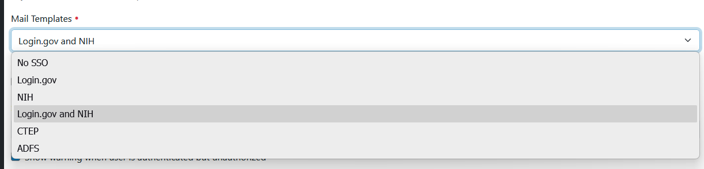

Email Messages
Email messages can be configured for specific IdPs for new user registration and for relinking Shibboleth/Plone accounts.
An example use case: the site supports NIH and Login.gov IdPs. If they do not have an NIH account, we want to instruct them to create a Login.gov account.
Email templates:
registered_notify- email message when user is registeredmail_relink- email message when user is relinked
Registering with zcml
Create a python class that provides the ims.sso.interfaces.IMailTemplates interface
class MyMailTemplates:
title = "My IdP"
def registered_notify(self):
return """You ({to_name}) have been registered as a user on {portal_title}. If you do not have an
NIH account, create a Login.gov account.
Please activate your account by visiting {link_url}."""
def mail_relink(self):
return """A site manager has granted you acccess to {portal_title}.
Follow this link to connect with your NIH or Login.gov account: {link_url}"""
Register with ZCML:
<utility
factory=".mailers.MyMailTemplates"
provides="ims.sso.interfaces.IMailTemplates"
name="ims.sso.idp.mysso"
/>
Select option in control panel
Once registered, this option will be available as an option in the Mail Templates field.

The vocabulary finds all registered providers of IMailTemplates